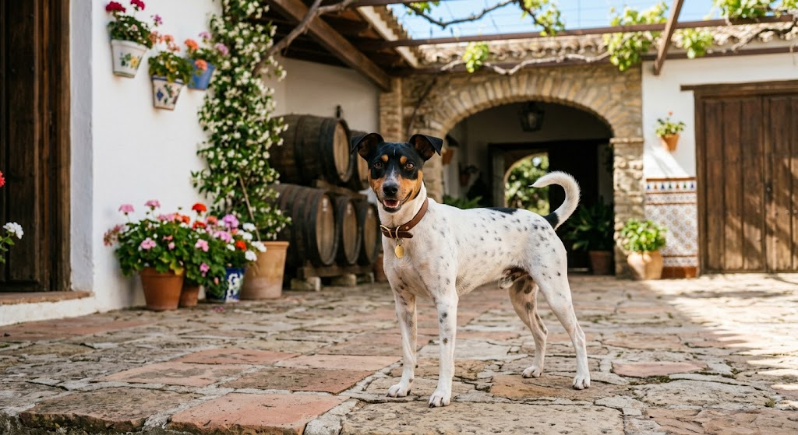
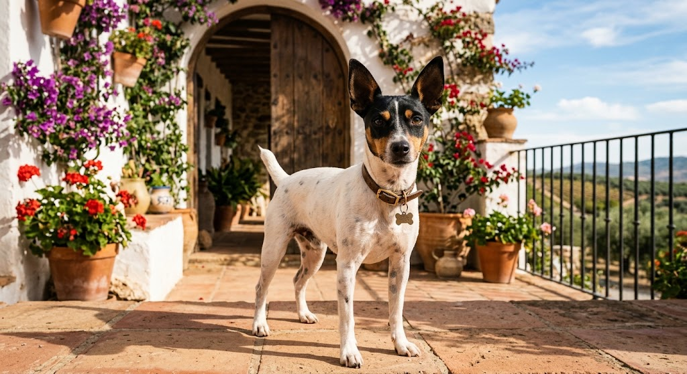
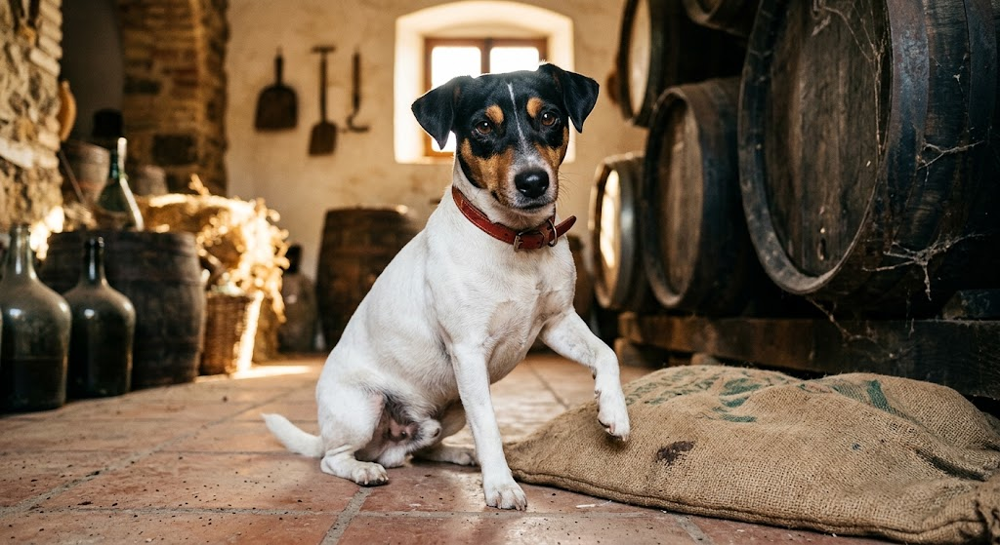
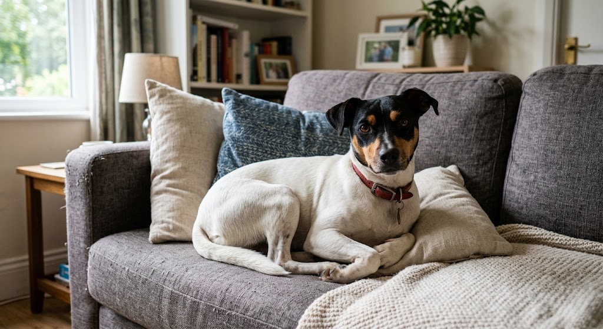
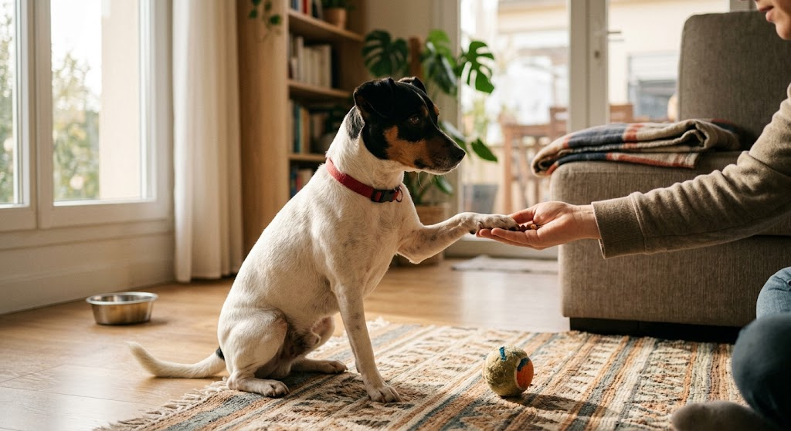
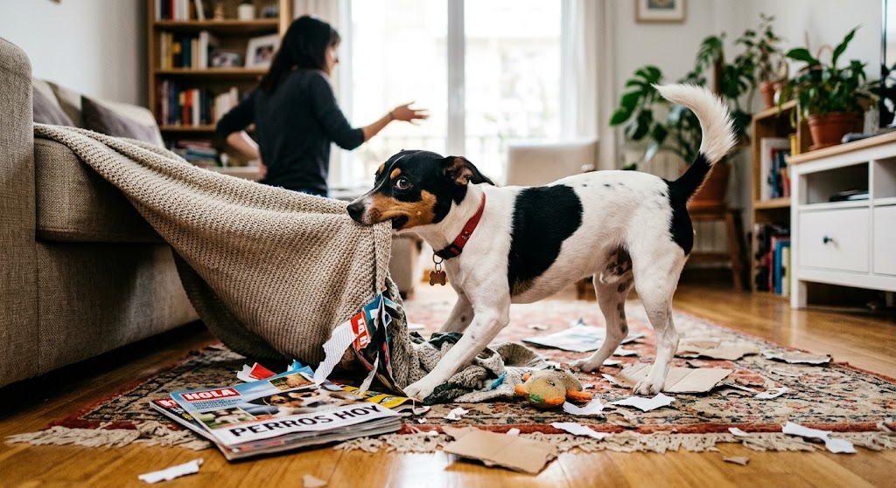
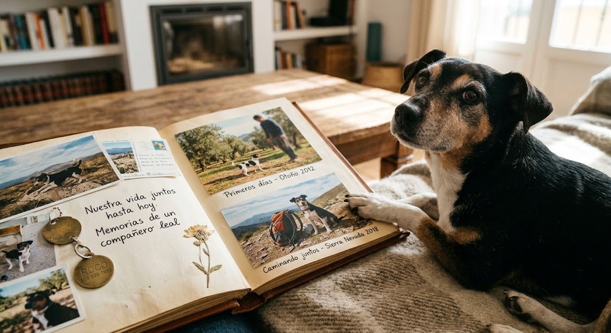

La historia de kira
Dónde nació y cómo llegó a mi vida

Kira nació en Andalucía, siendo una perrita alegre, despierta y con muchísima personalidad desde cachorra. Llegó a mi vida para llenarla de compañía, momentos inolvidables y mucha felicidad desde el primer día.
Sus juegos favoritos
Le apasiona correr a toda velocidad tras la pelota, jugar al tira y afloja con sus peluches favoritos y hacer carreras al aire libre en el parque le encanta que le tiren la pelota.

Manías
Tiene la costumbre de dar varias vueltas sobre sí misma antes de tumbarse, poner la patita sobre mi pierna cuando quiere atención o comida, y esconder sus juguetes bajo el sofá.

Su sitio favorito de la casa
Sin duda su lugar preferido es el centro del sofá y el punto exacto del salón donde entra el rayito de sol durante la tarde. y esconderse debajo de la cama cuando escucha algo que le molesta

Sus trucos y costumbres
Sabe dar la patita, sentarse, dar la vuelta y esperar pacientemente antes de comer. Su costumbre favorita es recibir a todo el mundo en la puerta con un recibimiento lleno de energía.

Lo que no aprenderá nunca

Mi bodeguero andaluz ha aprendido muchas cosas en su vida, pero hay algunas que parece que nunca aprenderá. Nunca aprenderá que el sofá no es su cama, que las zapatillas no son juguetes, que cuando digo “quieto” no significa “corre más”, ni que después de comer no hace falta volver a pedir comida cinco minutos después. Tampoco aprenderá que la basura no es un buffet libre ni que ladrar a una bolsa que se mueve con el viento no sirve de mucho. Pero, sinceramente, tampoco parece tener intención de aprenderlo.
Su vida hasta hoy

Ha sido una aventura increíble repleta de paseos, juegos, travesuras y amor incondicional. Hoy en día es el corazón y una parte fundamental de la casa.
Mirando hacia atrás, parece increíble lo rápido que ha pasado el tiempo desde que Kira llegó a casa. Pasó de ser una cachorrita inquieta que lo curioseaba todo a convertirse en la verdadera dueña y señora de la casa.
A lo largo de estos años hemos compartido infinidad de momentos inolvidables: largos paseos por el campo donde saca a relucir su auténtico instinto bodeguero, tardes enteras de juegos interminables y esas mañanas en las que no hay forma de moverla de la cama. Ha estado a mi lado en cada momento, regalándome siempre su alegría contagiosa y esa forma tan suya de comunicarse con la mirada.
Hoy en día, Kira es muchísimo más que una mascota; es una compañera inseparable, el corazón de la familia y la protagonista absoluta de nuestras mejores anécdotas. Cada día a su lado es una aventura diferente y no imagino la vida sin sus carreras, sus recibimientos en la puerta y su cariño incondicional.